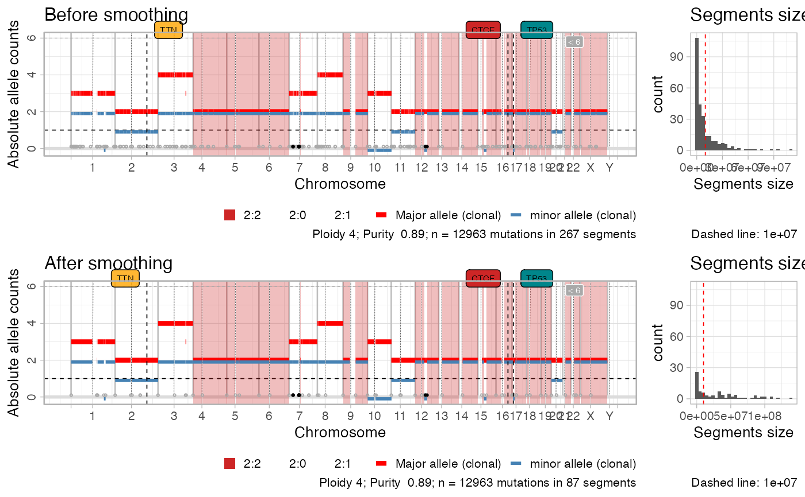

This functions join segments that have the same Major and minor alleles
(absolute copy number), and that are split by at most a certain number
of nucleotides Delta. The pre-smoothing copy number segments are
retained in the output computation.
smooth_segments(x, maximum_distance = 1e+06)
| x | An object of class |
|---|---|
| maximum_distance | The |
An object of class cnaqc, created by the init function.
data('example_dataset_CNAqc', package = 'CNAqc') x = init(example_dataset_CNAqc$snvs, example_dataset_CNAqc$cna,example_dataset_CNAqc$purity) #> [ CNAqc - CNA Quality Check ] #> #> ℹ Using reference genome coordinates for: GRCh38. #> ℹ Drivers are annotated, but 'gene' column is missing, using mutation location. #> ! Missing CCF column from CNA calls, adding CCF = 1 assuming clonal CNA calls. #> ℹ Input n = 12963 mutations for 267 CNA segments (267 clonal, 0 subclonal) #> #> ✔ Mapped n = 12963 mutations to clonal segments (100% of input) x = smooth_segments(x) #> Smoothing chr1 with 37 segments: [1-24] [27-30] [31-33] [34-37] #> Smoothing chr10 with 8 segments: [1-2] [3-4] [5-8] #> Smoothing chr11 with 22 segments: [1-7] [8-9] [10-22] #> Smoothing chr12 with 13 segments: [2-3] [12-13] #> Smoothing chr14 with 2 segments: [1-2] #> Smoothing chr15 with 9 segments: [1-5] [7-9] #> Smoothing chr16 with 10 segments: [1-6] [8-10] #> Smoothing chr17 with 10 segments: [4-5] [6-7] [8-10] #> Smoothing chr18 with 8 segments: [1-2] [3-8] #> Smoothing chr19 with 5 segments: [2-5] #> Smoothing chr2 with 18 segments: [1-8] [10-12] [14-18] #> Smoothing chr20 with 9 segments: [1-3] [4-9] #> Smoothing chr21 with 2 segments: [1-2] #> Smoothing chr22 with 3 segments: #> Smoothing chr3 with 19 segments: [1-7] [8-13] [15-19] #> Smoothing chr4 with 8 segments: [1-4] [5-8] #> Smoothing chr5 with 6 segments: [1-2] [3-5] #> Smoothing chr6 with 4 segments: [1-2] [3-4] #> Smoothing chr7 with 46 segments: [1-5] [9-27] [36-38] [39-41] [43-46] #> Smoothing chr8 with 18 segments: [1-4] [5-11] [12-18] #> Smoothing chr9 with 3 segments: [1-2] #> Smoothing chrX with 6 segments: [1-2] [3-6] #> #> ✔ Smoothed from 267 to 87 segments with 1e+06 gap (bases). #> ℹ Creating a new CNAqc object. The old object will be retained in the $before_smoothing field. #> [ CNAqc - CNA Quality Check ] #> #> ℹ Using reference genome coordinates for: GRCh38. #> ℹ Input n = 12963 mutations for 87 CNA segments (87 clonal, 0 subclonal) #> Warning: [CNAqc] a karyotype column is present in CNA calls, and will be overwritten #> #> ✔ Mapped n = 12963 mutations to clonal segments (100% of input) plot_smoothing(x) #> Scale for 'fill' is already present. Adding another scale for 'fill', which #> will replace the existing scale. #> Warning: Graphs cannot be horizontally aligned unless the axis parameter is set. Placing graphs unaligned. #> Scale for 'fill' is already present. Adding another scale for 'fill', which #> will replace the existing scale. #> Warning: Graphs cannot be horizontally aligned unless the axis parameter is set. Placing graphs unaligned. 